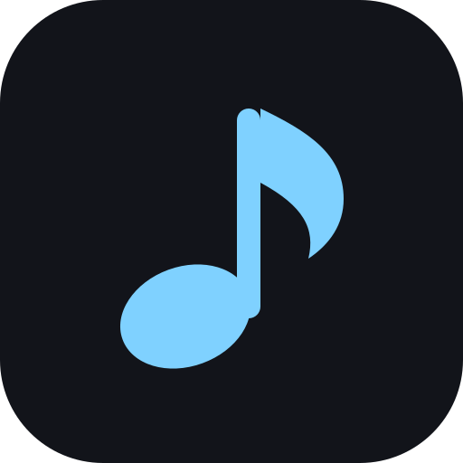

NoChordsType a song in once. Press play and the chart scrolls line by line at your tempo, counted in, so your hands stay on the instrument. Every playthrough hides a few more chords — until you can follow the lyrics alone.
Set the tempo, get counted in, and the chart moves with the song: the line being sung is marked, the beat is on screen, and the lines you have passed step back. Tap a line to jump.
Level one shows the verse and chorus whole and thins their repeats. Level two hides half. Level three hides most of it. Tap a line to peek — it never costs you progress.
The beat strip shows the meter, the beat sounding, and where you are in the line. A blurred chord is one you are learning to remember — tap the line to see it.
Each playthrough is a level. The first shows the verse and chorus whole and only starts thinning their repeats; the second hides half of every section; the third hides most of it, opening chords included. Set a level yourself, or let it climb on its own.
Lost a chord? Tap the line and it comes back for a few seconds — a glance at the answer, not a change of state.
One line per lyric line, with chords in brackets where they fall in the words.
There [Am]is a [C]house in New [D]Orleans — a chord sits over the word it is played on.|4| at the end of a line — this line lasts four bars instead of the song's usual.{3/4} at the start of a line — the meter changes from here until the next one.Tempo is a note and a number — ♩ = 90, or ♪ = 180 — because a bare BPM does not say what it is counting. Transpose with a tap; read the chart as Nashville numerals if you think in degrees.
A shaker by default, because it sits under a slow song rather than over it. A woodblock and a beep if you need to cut through. It counts you in, by one line's worth of bars, and the beat is on screen whether or not the sound is on.
Signed out, songs live in your browser and the app works with no connection at all. Sign in with Google and they follow you between devices.